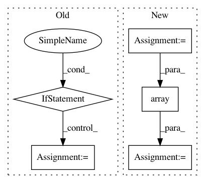

5dd5b8652f28426322309c4e983c94a3caa8fa8e,libact/query_strategies/variance_reduction.py,VarianceReduction,A,#VarianceReduction#,19
Before Change
grad = pi[c] * np.ones((feature_count*label_count))
for i in range(feature_count):
for j in range(label_count):
if c == j:
grad[i*label_count+j] *= (1-pi[c]) * x[i]
//grad.append(pi[c] * (1-pi[c]) * x[i])
else:
grad[i*label_count+j] *= (-pi[j]) * x[i]
//grad.append(-pi[c] * pi[j] * x[i])
//grad = np.array(grad)
//print(np.shape(grad))
return np.dot(grad.T, grad)
def Fisher(self, pi, x, label_count, feature_count):
fisher = np.ones((label_count*feature_count, label_count*feature_count))
After Change
print(s-time.time())
print(np.shape(grad))
_pi = -1 * np.array(pi)
_pi[c] += 1
grad = pi[c] * np.tile(np.array([x]).T, (1, label_count)) *\
np.tile(np.array([_pi]), (feature_count, 1))
grad = grad.reshape((feature_count*label_count))
return np.dot(grad.T, grad)
def Fisher(self, pi, x, label_count, feature_count):
In pattern: SUPERPATTERN
Frequency: 6
Non-data size: 5
Instances
Project Name: ntucllab/libact
Commit Name: 5dd5b8652f28426322309c4e983c94a3caa8fa8e
Time: 2014-12-19
Author: yangarbiter@gmail.com
File Name: libact/query_strategies/variance_reduction.py
Class Name: VarianceReduction
Method Name: A
Project Name: interactiveaudiolab/nussl
Commit Name: efc54499191ead69f875877badd3578c60eba7a6
Time: 2017-02-08
Author: ethanmanilow@gmail.com
File Name: nussl/audio_signal.py
Class Name: AudioSignal
Method Name: __init__
Project Name: mtobeiyf/audio-classification
Commit Name: 2f8b3e30e3deb3702ae79b5ef0c3bd84496dcfc5
Time: 2018-11-24
Author: mvrozanti@hotmail.com
File Name: feat_extract.py
Class Name:
Method Name: extract_feature
Project Name: shakedzy/dython
Commit Name: c39850dcb5112d64ffd9d4d4bce178155ecc3b64
Time: 2018-04-09
Author: shaked.zychlinski@doubleverify.com
File Name: dython/utils.py
Class Name:
Method Name: roc_graph
Project Name: enthought/chaco
Commit Name: 3d535702dc92b55d6bc8cc0c02d45d98c439b733
Time: 2008-12-01
Author: bhendrix@651a555e-23ca-0310-84fe-ca9f7c59d2ea
File Name: enthought/chaco/scatterplot.py
Class Name: ScatterPlot
Method Name: _gather_points_old
Project Name: eriklindernoren/PyTorch-YOLOv3
Commit Name: 122c24b4aeb11ecba5f77c3bf5ef8f20f2167c77
Time: 2018-06-07
Author: eriklindernoren@gmail.com
File Name: utils/datasets.py
Class Name: ListDataset
Method Name: __getitem__